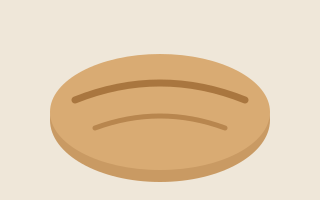

Country sourdough
Three days, one starter, a dark crust.
Since 2011
Four loaves, two pastries, one oven. We open at seven and stop when the shelves are empty.

Three days, one starter, a dark crust.
Caraway, linseed and a close crumb.